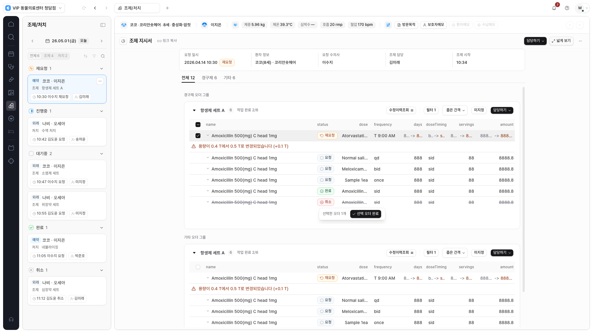
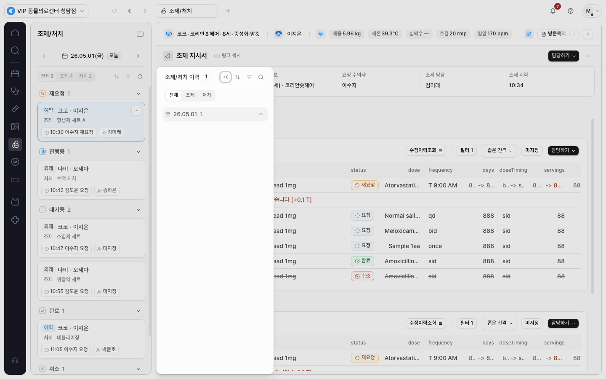
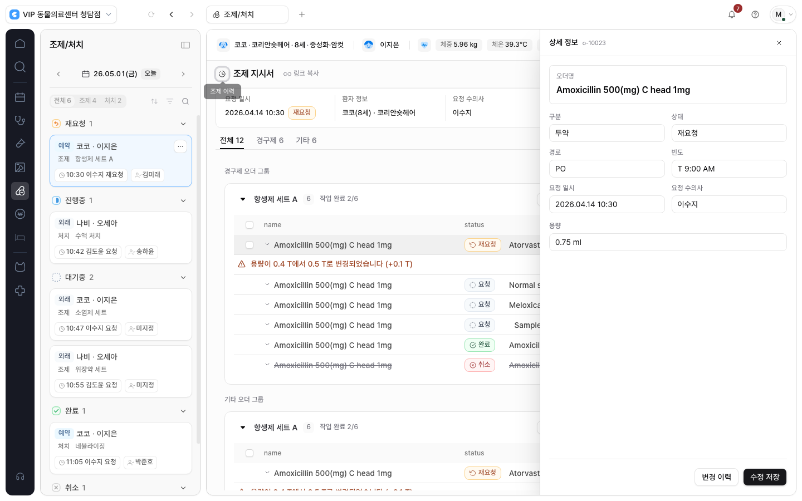
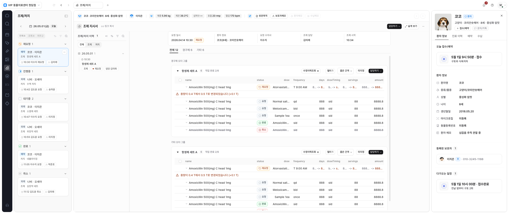

조제/처치에도
좁게·넓게 보기와 내부 이력을 적용했습니다.
로컬 구현 · 화면 검토 대기
지시서는 1,120px로 모아 보고, 많은 오더 열을 확인할 때 넓게 펼칠 수 있습니다. 지시서 제목과 업무 버튼은 작업 화면 전체 폭을 사용합니다.
기존 합성 시나리오와 합성 응답으로 검증했습니다. 운영 서비스에는 배포하지 않았습니다.
이번에 달라진 점
대기열·이력·프로필을 제외한 실제 문서 공간이 1,120px보다 넓을 때 폭 버튼이 나타납니다. 버튼이 숨겨져도 보기 선택을 유지하고, 검사·차트·조제는 각자의 설정을 기억합니다.
오더 표의 열·글자 크기·간격은 유지합니다. 좁은 공간에서는 표 안에서 가로로 스크롤하고, 넓게 보기에서는 더 많은 열을 동시에 확인할 수 있습니다.
같은 지시서에서 폭 비교
1,920px 화면의 좁게·넓게 보기를 비교합니다. 같은 오더 선택 상태를 유지한 검증 캡처입니다.

캡처의 주황색 안내는 기존 합성 지시서에 실행 업무가 연결되지 않았을 때의 상태입니다. 실제 응답 형태로 구성한 별도 합성 테스트에서는 업무 이력·담당·시작 흐름도 확인했습니다.
이력과 상세 입력 유지
넓은 공간에서는 이력을 지시서 옆에 표시합니다. 좁은 공간에서는 모달로 열고, Tab 포커스는 이력 안에 머뭅니다. Escape로 닫으면 열었던 버튼으로 돌아갑니다.

기존 오더 상세 영역은 같은 위치에서 사용합니다. 폭과 이력 표시 방식을 바꾸거나 화면을 줄여도 입력 중인 값이 유지되는지 확인했습니다.

환자 프로필과 함께 보기
환자 프로필은 바깥 오른쪽 영역을 사용합니다. 지시서 왼쪽 이력과 함께 열어도 문서와 프로필이 겹치지 않는지 확인했습니다.

검증 결과
최종 검증 40개 항목 통과. 새 조제 레이아웃 7개, 기존 조제 업무 8개, 차트 레이아웃 6개, 검사 공통 레이아웃 9개, 공유 오른쪽 패널 5개, 차트·조제 오더 계약 5개를 확인했습니다.
| 영역 | 확인한 내용 |
|---|---|
| 보기·입력 상태 | 오더 선택, 열과 간격, 상세 입력, 세로·가로 스크롤, 화면 유지, 모듈별 보기 설정 |
| 화면·접근성 | 1366 / 1440 / 1600 / 1920 / 2560 및 960 CSS px, 이력 Tab·Escape·포커스 복귀, 모션 감소, 프로필 공존 |
| 기존 업무 | 담당·담당 취소·시작, 서버 응답 후 상태 갱신, 승인된 약품 정보, 빈 업무·권한 오류·저장 실패 대응 |
| 정적 검사 | 프로덕션 빌드, 타입 검사, 변경 파일 ESLint, 문서·diff·보안 검사 통과 |
첫 실행에서는 15개 중 14개가 통과했습니다. 기존 업무 테스트가 좁은 화면에서 열린 이력 모달 뒤의 버튼을 누르려던 흐름을 수정해, 이력을 닫고 업무를 이어가도록 재검증했습니다. 최종 40개는 모두 통과했습니다.
960 CSS px는 확대에 따른 공간 부족을 확인하는 대체 조건입니다. 실제 브라우저 확대, 운영 인증 데이터, 실환자 업무나 임상 사용성 평가는 포함하지 않습니다.
범위와 다음 단계
조제 모듈·모듈 레지스트리·관련 브라우저 테스트·폭 계약 문서·작업 항목을 갱신했습니다. 기존 API·DB·권한·업무 상태 정책과 저장 계약은 유지했습니다.
기존 기본 체크아웃의 작업은 보존했습니다. 커밋·푸시·병합·배포나 실제 데이터 작업은 수행하지 않았습니다.
다음 대상은 영상입니다. 기존 viewer의 화면 크기와 조작 제약을 확인하고 같은 폭 계약을 적용하는 순서입니다.